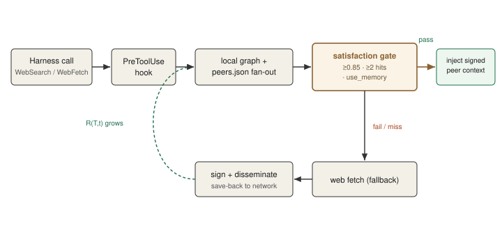
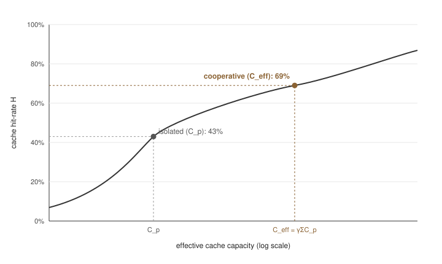
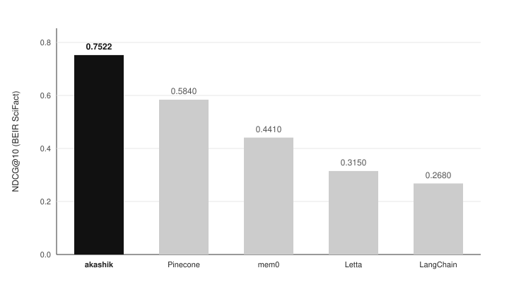
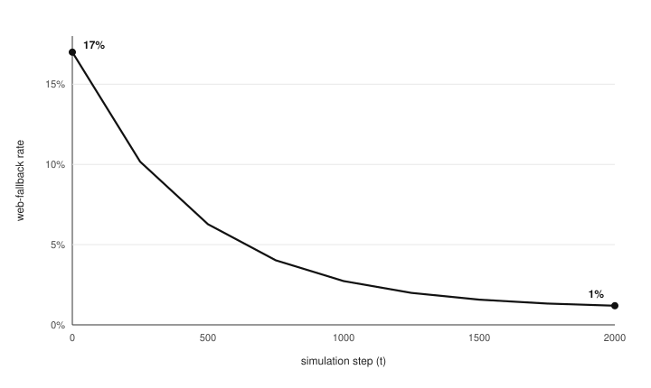
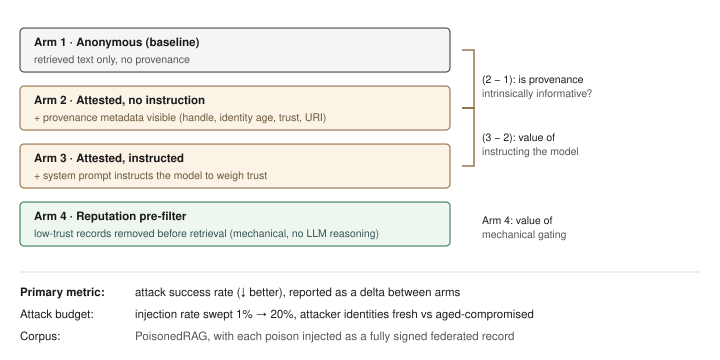

A peer-to-peer knowledge layer where research compounds across the network.
Version 0.1 (pre-launch draft) · MIT-licensed protocol
Large language model agents continuously re-derive the same answers. The same paper is read, the same regression is debugged, and the same retrieval is billed per token thousands of times daily across the open-source community, with each result discarded when the session ends. Folklore is a peer-to-peer protocol designed to make that inference work compound rather than evaporate. Each peer maintains a local graph-RAG over its own code, research, and past sessions; queries fan out to connected peers before reaching the paid web; and every record is signed with a cryptographic identity bound to a verified GitHub handle. We formalize the central claim, "we compound on inference," as a monotonicity property over R(T,t), the number of peers holding a resolved answer for topic T at time t. The claim is grounded in established cache theory: pooled cooperative capacity under Mandelbrot-Zipf demand, evaluated with Che's LRU approximation, raises the network's hit-rate ceiling and collapses the marginal cost of resolving a topic after the first peer pays for it. A 10-peer federation simulator shows the web-fallback rate falling from 17% to 1% over 2,000 steps. We show, however, that this v1 result treats per-peer retrieval as a boolean, which makes part of the decay true by construction rather than an empirical discovery; we therefore present it as a demonstration, not evidence, and specify the v2 experiment, a semantic-satisfaction-threshold sweep, that makes the claim genuinely falsifiable. This paper presents the full system architecture, a formal compounding model, a security architecture and threat model centered on provenance-attested retrieval against context poisoning, the empirical results to date with their limitations, and the open problems that remain.
Keywords: peer-to-peer retrieval, retrieval-augmented generation, cooperative cache theory, federated knowledge, cryptographic provenance, RAG poisoning, trust calibration.
Open source built the freest software stack in history by sharing code: CRAN, npm, PyPI, GitHub, arXiv. Distribution of artifacts compounds, so each contribution permanently improves what every future engineer starts with. The knowledge between the code has never had the same substrate. What an engineer read, what they figured out at 3am, the synthesis that explained why a fix worked: this dies with the session. The same papers are re-explained in posts that 404 within a year, and the same regression is diagnosed in parallel by many engineers the following week.
The cost of this redundancy is now metered. Every retrieval-augmented call an LLM agent makes is billed per token, run against the same data that has already been processed many times over. The waste is not only economic. It represents a missed opportunity: inference that could build on prior inference instead restarts from zero each time.
Folklore's central claim is that knowledge work can compound the way code distribution does, provided three properties hold:
We term this "compounding on inference": each answer a peer produces becomes reasoning the next peer inherits. The network thereby reasons from a broader base than any single node, and the marginal cost of a topic falls toward a federation round-trip after the first peer pays the full cost.
This paper specifies the protocol, formalizes the compounding claim with an explicit statement of when it is a theorem versus an empirical claim, presents the security architecture and threat model, reports the empirical results to date with their limitations, positions the work against prior art, and enumerates open problems. It is a pre-launch draft: the federation result is from a simulator, not a pilot, and we preserve that distinction throughout.
Contributions. This paper makes four contributions:
Let T be a topic, defined as a query together with its answerable neighborhood, and let R(T, t) be the number of peers in the network holding a cached, resolved answer for T at time t.
Under the protocol, when a peer resolves T, whether from a peer cache or, on a miss, from the web, the resolved and signed answer is disseminated so that other peers can cache it. The intended consequence is that R(T, t) grows over time and the community's marginal cost to resolve T collapses toward a federation round-trip once the first peer has paid the full cost.
The observable proxy for this process is the web-fallback rate: the fraction of research-shaped queries that pass through to a paid web call because no peer could satisfy them locally. If the thesis holds, this rate decays as the network accumulates resolutions.
Section 5 makes this precise, including the conditions under which monotonicity of R(T, t) is true by construction versus an empirical claim that a properly designed experiment must be capable of falsifying.
Each peer operates independently, without a central server. Every peer maintains a local graph-RAG: a retrieval index over its own code, research, and past LLM/agent sessions, held on its own machine. Storage cost on any peer scales with that peer's own activity, not the community's total volume.
Every record in the graph carries a fixed schema so that all context is fully traceable:
identity: the curator's cryptographic peer identity (public key).signature: a signature over the record content, produced with the private key.github_handle: the verified GitHub handle bound to the identity.source_uri: the origin of the content (a paper URL, a thread, a file path).fetch_timestamp: when the content was retrieved.content: the resolved text or synthesis.embeddings: the dense vectors used for semantic retrieval.grounding_artifacts: the sources the record was grounded on.Each cached RAG context is signed with a private key bound to a verified GitHub handle and a public cryptographic identity. This binding yields three formal guarantees:
The architecture is explicit about the limit of these guarantees: cryptographic attestation cannot verify the semantic accuracy, truthfulness, or safety of the content. A peer with a verified and reputable identity can still be compromised or act as an honest-but-confused node, signing and distributing hallucinated or poisoned context. Provenance secures the channel and the chain of custody; it does not certify truth. Section 6 addresses how the protocol layers semantic defenses on top of cryptographic provenance.
Within each peer, retrieval executes as a layered pipeline:
The protocol installs a decentralized cooperative semantic interception hook. When a peer's harness (for example, Claude Code or an MCP client) attempts a research-shaped call such as WebSearch or WebFetch, the hook intercepts it and executes the following sequence:
peers.json.satisfaction_score >= 0.85 on the top result, after the full rerank pipeline.Figure 1 summarizes this flow.

The deny pathway is opt-in per project, because a false positive, the graph claiming it has an answer it does not, costs more than a redundant fetch. Only WebSearch and WebFetch are deniable; local tools such as Read, Glob, and Grep are never blocked.
This creates an apparent tension with the compounding thesis: if the mechanism that cancels the paid web call is off by default, does the default network compound at all? The resolution is that compounding and hard-denial are separate mechanisms. Two things occur on every research-shaped call regardless of the deny setting: (1) the local-plus-federated graph is consulted first, and any sufficiently good hit is injected into the model's context; and (2) on a web fallback, the resolved result is signed and disseminated, growing R(T,t). Knowledge accrual and cross-peer transfer, which constitute the thesis, are therefore default-on. What FOLKLORE_DENY_WEBSEARCH controls is only whether a satisfied query also hard-cancels the redundant web call to capture the full token saving. The default network still compounds knowledge and serves it as context; the opt-in deny mode converts that compounding into a hard cost reduction once an operator trusts the graph's coverage. The benchmark in Section 7.2 measures the deny-on regime, representing the upper bound on cost savings; the default regime captures the same knowledge accrual with a softer cost effect.
Per-project tunables:
FOLKLORE_DENY_WEBSEARCH=1 # opt in to the deny pathway (off by default)
FOLKLORE_DENY_THRESHOLD=0.85 # satisfaction floor
FOLKLORE_DENY_MIN_HITS=2 # minimum hits to allow the deny
FOLKLORE_PREFETCH_PEERS=0 # local-only, skip federated fan-out
Peer discovery and transport reuse established structured routing primitives. The protocol uses Kademlia-style routing overlays, cryptographic content identifiers (CIDs), and replication intervals to manage the P2P topology. Query distribution and save-back propagation are modeled as a fanned-out gossip protocol with epidemic dissemination dynamics, segmenting nodes into Ignorants, Active Spreaders, and Stiflers, following the SIR rumor-spreading literature discussed in Section 5.1.
Folklore does not alter how an engineer works. Once installed and running, the interception hook sits in front of the harness's research-shaped calls without requiring workflow changes.
| Harness | Integration | Status |
|---|---|---|
| Claude Code | folklore claude install wires PreToolUse + PostToolUse + SessionStart hooks and a CLAUDE.md system-prompt section. |
Implemented |
| Any MCP-capable harness | Register folklore mcp start as an MCP tool server; the harness's tool-routing layer prefers folklore for query-shaped calls. |
Intended integration path |
| Anything with a PreToolUse hook | Point the harness's PreToolUse config at the reusable folklore-smart-hook.cjs. |
Intended integration path |
The Claude Code path is implemented; the MCP and generic-hook paths are intended integration points that follow the same interception contract. After integration, the local-plus-federated graph becomes the first hop on every research-shaped call.
We model the compounding claim with classical cache theory. The appropriate formalism is cooperative cache hit-rate under heavy-tailed demand, evaluated with Che's LRU approximation. Epidemic/gossip models and network-effects economics are complementary layers; they are not the load-bearing model, and their role is discussed in Section 8.
Query popularity follows a power law. For a catalog of N topics, the strict-Zipf probability q_i of the i-th most popular topic is
\[q_i = \frac{i^{-\alpha}}{\sum_{j=1}^{N} j^{-\alpha}}, \qquad \alpha \ge 0\]
where alpha is the Zipfian exponent. Observed access patterns are better fit by the Mandelbrot-Zipf generalization, which introduces a plateau parameter q >= 0 that flattens the high-frequency head:
\[q_i = \frac{(i + q)^{-\alpha}}{\sum_{j=1}^{N} (j + q)^{-\alpha}}\]
with q = 0 recovering strict Zipf. Both the simulator and the cooperative-caching literature use the Mandelbrot-Zipf form; the formal results below carry over directly with the shifted ranks.
The pooled memory of a cooperating set of peers P exceeds that of any single node. Let C_p be the local cache size of peer p. The effective cooperative capacity is
\[C_{\text{eff}} = \gamma \sum_{p \in P} C_p, \qquad \gamma \in (0, 1]\]
where gamma is a cooperation-efficiency factor that discounts for redundancy, churn, and imperfect routing.
This is a deliberate simplification with a known weakness. Che's approximation assumes independent per-object caching probabilities. In a gossip-disseminated network without strict DHT partitioning, the same record is replicated across many peers, so the effective distinct capacity is less than the naive sum and the independence assumption is violated. Collapsing all of that into a single scalar gamma is an approximation, not a derivation. A rigorous treatment derives gamma from the expected replication overlap (a function of the gossip fan-out, TTL, and churn rate); we treat that derivation as open work (Section 9). The numbers below should be read as the ceiling the model permits, not the rate the network will achieve.
Under a Least-Recently-Used policy, the hit probability h_i for topic i is approximated by Che's method as
\[h_i \approx 1 - e^{-q_i \, t_C}\]
where the characteristic time t_C is the unique root of the capacity-constraint equation
\[C = \sum_{i=1}^{N} \left( 1 - e^{-q_i \, t_C} \right).\]
The overall hit rate is the demand-weighted sum H = sum_i q_i h_i.
Evaluating Che's approximation at C = C_eff instead of a single node's C_p, under Mandelbrot-Zipf demand, raises the ideal hit-rate ceiling. In the formalization documents this is illustrated as a rise from an isolated single-node level (on the order of 43%) to a cooperative level (on the order of 69%) under one chosen set of parameters (catalog size N, exponent alpha, plateau q, per-node capacity C_p, and cooperation factor gamma). These two figures are parameter-sensitive model outputs, not measured production rates and not a performance guarantee: changing alpha or gamma moves both numbers substantially, and the gamma simplification of Section 5.2 inflates the cooperative figure relative to a network with heavy replication overlap. They illustrate the direction of the mechanism (pooling raises the ceiling, and the complement of the hit rate is the web-fallback rate) rather than its magnitude. A parameter-sensitivity sweep is required before either figure is cited as evidence. Figure 4 depicts the mechanism: the two operating points lie on a single saturating hit-rate curve, with the cooperative point reached by enlarging capacity from C_p to C_eff.

C_eff shifts the operating point along the same saturating curve. The 43% and 69% values are parameter-sensitive model illustrations under one chosen configuration, not measured rates.The decision to contribute is modeled as a voluntary-contribution game. A peer i's utility is
\[U_i(x_i, Y) = u_i(x_i) + \theta_i \cdot V(Y)\]
where x_i is the peer's private resource expenditure (memory, compute), u_i its private utility, Y the aggregate cooperative cache, and theta_i the peer's valuation of the shared good. This framing exposes a free-rider risk: a peer can query the network (benefit from Y) while contributing nothing (x_i = 0). The model is not decorative only if it drives a mechanism. The intended mechanism is contribution-gated federation: a peer's query priority and fan-out reach are weighted by its EigenTrust standing (Section 6.4), which in turn is earned by satisfactory contributions. Free-riding and Sybil resistance are therefore handled by the same reputation layer, with the caveat that this gating policy is specified but not yet validated (Section 9, cold-start). A peer reviewer will note that contribution gating and the cold-start problem are in direct tension, which we acknowledge rather than resolve here.
The headline claim is that R(T, t) is monotonically non-decreasing. This is a theorem true by construction only under idealized constraints: infinite local storage (no eviction), zero peer offline-churn, and infinite cryptographic time-to-live (no temporal decay). In any real network none of these hold: finite storage forces LRU/LFU eviction, peers disconnect, and records expire, so the cardinality of R(T, t) actively fluctuates. Under realistic constraints, monotonicity is an empirical claim that an experiment must be designed to falsify.
This is the crux of honest evaluation. Because the v1 simulator (Section 7.2) treats per-peer retrieval as a boolean ("does peer N hold doc D"), it assumes exact-match retrieval and therefore bakes in part of the decay. The experiment that makes the claim genuinely falsifiable must vary the semantic satisfaction threshold: sweep it (for example 0.75 to 0.95 in 0.01 increments) on a continuous semantic-similarity harness to find the point at which natural linguistic variance forces a cache miss and breaks the idealized compounding curve. That is the v2 design (Section 7.3).
A peer-to-peer RAG network exposes a large attack surface. We separate what the Folklore formalization specifies from what is borrowed from the literature and still needs integration.
Specified in the Folklore architecture:
Borrowed from the literature, needs integration:
As in Section 3.2, signing binds each record to a verified identity and yields authenticity, integrity, and non-repudiation. The explicit limit bears repeating because it motivates the rest of this section: cryptography secures who said it and that it was not altered, but not whether it is true or safe. Defenses against poisoned-but-validly-signed content must be semantic, not only cryptographic.
The literature establishes that the attack is cheap and effective. PoisonedRAG demonstrates that injecting as few as 5 poisoned texts into a database of millions can reach a 97% attack success rate, where a successful attack must satisfy a retrieval condition (the poison ranks above legitimate documents) and an effectiveness condition (it compels the target output). Layered defenses from the literature include:
Folklore specifies a three-stage defense that integrates these ideas. All three stages are specified in the architecture but not yet implemented or evaluated (none appears in the empirical results of Section 7):
The protocol's distinctive lever is attestation as a candidate trust signal. Because every retrieved chunk carries provenance metadata (peer identity, verified handle, source URI, timestamp, grounding artifacts), a consuming LLM could in principle weigh retrieved context against its lineage before treating it as factual grounding, in the spirit of SBOM/AIBOM supply-chain attestation. We state this as a hypothesis, not a guarantee: a cryptographically signed poison is still a poison, and LLMs are known to be susceptible to context-hijacking and sycophancy regardless of metadata. Whether a model can actually weigh a provenance tag against an adversarial payload is an open empirical question, the protocol's strongest research direction, and the subject of the planned safety experiment in Section 7.4.
The literature provides a hard result: there is no symmetric, Sybil-proof, nontrivial reputation function (Sybilproof Reputation Mechanisms). A symmetric function cannot distinguish a real trust graph from an exact attacker-made duplicate, so any symmetric system lets an adversary inflate rank with fake nodes. Sybil resistance therefore requires an asymmetric approach that propagates trust from pre-trusted seed nodes.
Folklore adopts this via EigenTrust. Local trust is computed from satisfactory versus unsatisfactory transactions, s_ij = sat(i, j) - unsat(i, j), and global trust is computed recursively with pre-trusted seeds:
\[t^{(k+1)} = (1 - a)\, C^{\top} t^{(k)} + a\, p\]
where C is the normalized local-trust matrix, p is the distribution over pre-trusted seed peers, and a is the teleport probability back to those seeds. The teleportation forces the trust computation to periodically return to verified foundation peers, so a Sybil cluster cannot inflate its global reputation merely by exchanging trust among its own members.
When a signed record is found to be poisoned or becomes stale, the network must be able to retract it. Folklore maps PKI revocation to signed knowledge:
On the full BEIR SciFact benchmark (5,183 documents, 300 queries), the per-peer retrieval stack scores 0.7522 NDCG@10, CPU-only, with an 11 ms median, no LLM judging an LLM. For reference against published single-user baselines: Pinecone-baseline 0.5840, mem0 0.4410, Letta 0.3150, LangChain-RAG 0.2680 (Figure 3). This establishes that the per-peer retriever is competitive before any federation; the federation question is separate.

FolkloreBench-F is a federation-level simulator measuring web_fallback_rate(t) over a peer network with offline churn. First run, on the LoCoMo factual subset:
| Parameter | Value |
|---|---|
| Corpus | LoCoMo factual subset, 695 queries |
| Peers | 10, strictly disjoint initial shards |
| Sim steps | 2,000 |
| Offline churn | 20% |
| Query distribution | Zipfian (alpha = 1.0) |
| Metric | Value | Reading |
|---|---|---|
| web_fallback_rate (start) | 0.170 | 17% of queries hit the web at t=0 |
| web_fallback_rate (end) | 0.010 | 1% of queries hit the web by t=2,000 |
| web_fallback_rate (run-average) | 0.045 | 4.5% of all queries across the full 2,000-step run hit the web |
| Compounding slope | -4.74e-5 | Negative; thesis holds for this corpus |
The end-state (1%) and the run-average (4.5%) are different quantities and must not be conflated: the curve decays over the run, so the average over all steps is higher than the converged end value. The headline claim is the decay (17% to 1%) and its negative slope, not a single point estimate. Figure 2 plots the decay.

These are simulator numbers, not pilot numbers. The v1 simulator treats per-peer retrieval as a boolean ("does peer N hold doc D"). As Section 5.6 argues, that abstraction makes part of the 17%-to-1% decay a property of the cache model rather than an empirical discovery, because monotonicity is near-tautological once retrieval is assumed exact.
The v2 experiment removes the abstraction. Each simulated peer runs the actual retrieval stack (BM25 + vector + RRF, cross-encoder, personalized PageRank) over its shard, producing a real continuous satisfaction score per query per peer. The experiment then sweeps the satisfaction threshold and reports how the compounding curve bends as the threshold tightens. The threshold sweep is what makes the claim falsifiable: if natural semantic variance breaks the curve at a realistic threshold, the thesis is weakened in a measurable way; if it survives, the result is genuine rather than built-in. Real-world validation beyond the simulator is a 100-peer pilot in the local-AI / agent-tooling ecosystem, measuring the real web-fallback curve over 30 days of traffic.
The architecture's strongest safety claim, that per-record provenance lets a consuming LLM detect and refuse poisoned context, is currently an aspiration, not a result. This subsection specifies the experiment that would make it a falsifiable empirical contribution. The experiment is not yet run; it is stated here so the claim is operationalized rather than hand-waved.
Figure 5 lays out the design. This is the experiment that converts Folklore from cost-saving infrastructure into a testable claim about trust-calibrated retrieval. It reuses the infrastructure the protocol already builds (signed, attributed records) and an apparatus almost no one else has (a provenance-attested federated retrieval network), which is precisely why it is the protocol's most defensible research direction.

Folklore sits at the intersection of several mature fields. The defensible novelty is demand-shaped cross-peer transfer of resolved RAG inference, with cryptographically attested provenance on every record. We position against the closest prior art:
In one sentence: prior art solves routing, single-tenant caching, strong retrieval, and attestation separately; Folklore composes them into a demand-shaped, signed, federated knowledge layer, and the composition (not any single component) is the contribution.
Folklore proposes that knowledge work can compound across the open-source community the way code distribution already does, given three properties: local-only graphs, signed provenance on every record, and demand-shaped federation that resolves a topic once for the whole network. We formalized the compounding claim with cooperative cache theory, stated precisely when its monotonicity is a theorem versus an empirical claim, and specified the threshold-sweep experiment that makes it falsifiable. We presented a security architecture in which cryptographic provenance secures the chain of custody and a three-stage semantic-plus-reputation layer addresses the poisoning it cannot, with the open and most interesting question being whether attestation metadata lets an LLM calibrate trust on retrieved context. The per-peer retriever is competitive today (0.7522 NDCG@10 on BEIR SciFact). The federation result (17% to 1% web-fallback in simulation) is not yet usable as evidence: under v1's boolean-retrieval abstraction the decay is partly true by construction (Section 5.6), so we report it as a demonstration that the simulator runs and the curve has the predicted sign, not as a validated claim. It becomes evidence only after the v2 threshold sweep (Section 7.3) shows the curve survives realistic semantic variance. The protocol is MIT-licensed with no central server. The next milestones are the v2 falsification experiment and a 100-peer pilot.
The following sources ground this paper. Citations refer to documents collected in the project research notebook.
Folklore primary documents
Cache theory and demand modeling
Retrieval and RAG
RAG security and poisoning
P2P, gossip, reputation
Provenance, revocation, supply-chain trust
Pre-launch draft. The federation result is simulator-derived; the v2 experiment and the 100-peer pilot are pending. Formulas and the isolated-vs-cooperative hit-rate figures are drawn from the Folklore formalization documents; the 43% and 69% values are model illustrations under chosen parameters, not measured production rates.